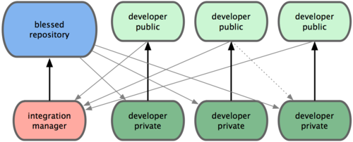
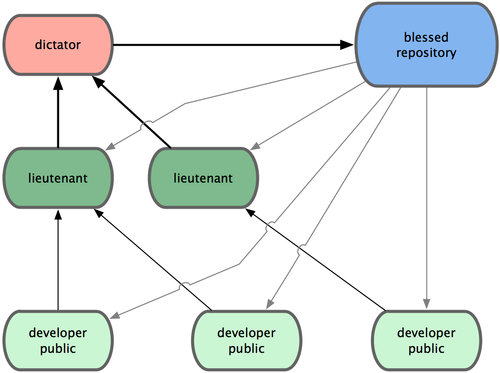
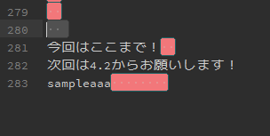
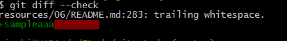

@syoboshim
やり方をざっくりいうと、
書き込み権限を持つ公開リポジトリを各自が持ち
他のメンバーからは読み込みのみのアクセスを許可するという方式

（GitHubがこれ）
何百人もの開発者が参加するような巨大なプロジェクトで採用されている
統合マネージャー(複数人)
それぞれにリポジトリの特定の部分を担当させる
すべての若頭をまとめる統合マネージャー

一般的ではないが大規模なプロジェクトや高度に階層化された環境では便利
プロジェクトリーダー(独裁者) が大半の作業を委譲し、
サブセット単位である程度まとまってからコードを統合することができる
コミットのルールを守ってプロジェクトを進めていこうね。
仁義あるプロジェクトを目指そう！
Git プロジェクトでは、パッチの投稿用のコミットを
作成するときのヒントをまとめたドキュメントを用意しています
⇒Documentation/SubmittingPatches
git diff --checkコマンドを使用することで、
余分な空白をチェックしてくれる

コマンド実行結果

個々の変更内容を把握しやすくする
別々の問題の修正で同じファイルを変更している場合は
git add --patchを使う
(一部だけをステージすることができる)
詳細は第6章で！！
いい感じのコミットメッセージを書きましょう
一般的な規則
git log --no-mergesを実行すれば
きれいに整形されたプロジェクトの歴史が
どのように見えるかがわかります。
コマンドうってみましょう！
それぞれのプロジェクトで、
どのようにGitを使っていけばいいかの例がのってます
git request-pull [プル先のブランチ] [Gitリポジトリ]
プルしてもらいたい変更の概要が出力される
使用例
$ git request-pull origin/master myfork
出力結果はP134をみてね
mergeのオプション
--squashオプション
マージしたいブランチでのすべての作業をひとつのコミットにまとめ、
それを現在のブランチの先頭にマージ
--no-commitオプション
自動的にコミットを記録しないようGit に指示
使用例
$ git merge --no-commit --squash featureB
git format-patch
mbox 形式のファイルが作成される
コミットメッセージの一行目が件名
残りのコミットメッセージとコミット内容のパッチが本文
format-patch で作成したメールからパッチを適用すると、
すべてのコミット情報が適切に維持される
使用例
$ git format-patch -M origin/master
-M スイッチ … 名前が変わったことを検出するためのもの
出力結果はP137
– の行とパッチの開始位置(lib/simplegit.rb の行) の間に
メッセージを書くと、
メールを受信した人はそれを読むことができますが、
パッチからは除外されます
メーリングリストへの投稿方法
Documentation/SubmittingPatches に
さまざまなメールソフトでの詳細なメール送信方法が載っている
※メールソフトの機能(自動改行等)によって
フォーマットが勝手に変わらないよう、設定することができる
新しい機能を組み込もうと考えている場合は
トピックブランチを作るのがおすすめ！
※トピックブランチ … 一時的に作るブランチ
使用コマンド
ブランチ作成 … $ git branch [ブランチ名] master
ブランチ切替 … $ git checkout -b [ブランチ名] master
いいところ
うまくいかなかったときにすぐ戻すことができる！
※一般的なトピックブランチの名前
[作業者名]/[作業内容]
例) sc/ruby_client
git diff あるいはUnix のdiff コマンドで作ったパッチを
適用する場合に使用。
作業ディレクトリ内のファイルを変更する。
※コミットを作成するわけではない（ステージとコミットが別途必要）
使用コマンド … $ git apply [パッチのフルパス]
パッチがちゃんとあたっているか確認することができる
使用コマンド … $ git apply --check [パッチ名]
※きちんと適用されていれば何も表示されない
※チェックに失敗したらゼロ以外の値が返る
format-patch コマンドを使って作ったパッチを適用する場合に使用。
git send-emailを使用してつくったメールをmbox形式で保存して
コマンドを使用する。
※コミットを自動でやってくれる
使用コマンド … $ git am [パッチ名]
コミット時の情報は自動で取得される！
パッチの適用に失敗した場合
ファイルを修正した後に、
$ git add [修正ファイル名]
$ git am --resolved
-3 オプションを使うと